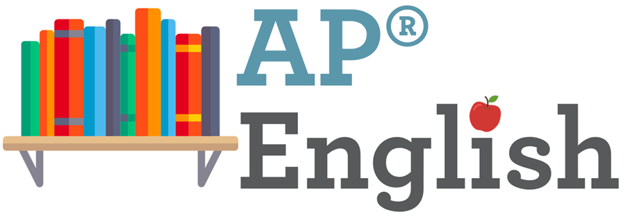

Ap English Guide
Info
Vocabulary
Timed Writing
Fast Reading
Class Essays
Cheat Sheet
Bonus

This is a college class that high schoolers can take. If they pass the exam then they don't worry about having to take or pay for it in college. You take the exam in May. You'll need at least a 3 to get a credit in college. For multipe choice, you'll need to get a 26 out of 50 questions to pass. There are 3 timed essays.
Synthesis: Students read several texts about a topic and create an argument that synthesizes at least three of the sources to support their thesis.
Rhetorical analysis: Students read a non-fiction text and analyze how the writer's language choices contribute to his or her purpose and intended meaning for the text.
Argument: Students create an evidence-based argument that responds to a given topic.